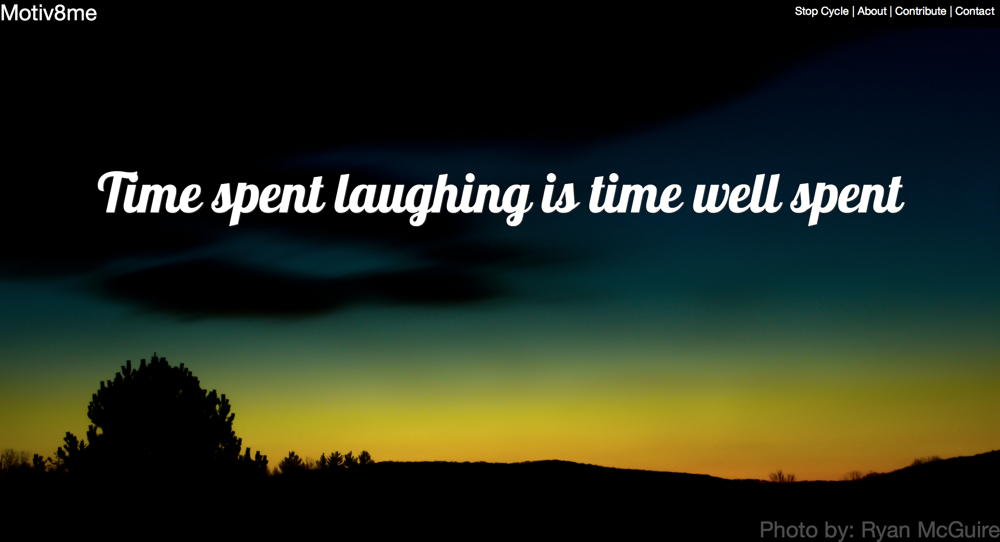

About Me

My Story:
I started out as a kid who loved video games and I've grown to a team leader and software developer that loves to make products that both clients and their users enjoy. I was first introduced to Computer Science five years ago and from the start I had a love for it and solving problems through software.
North Carolina State University, Raleigh, NC
B.S. Computer Science, December 2014
GPA: 3.01
Dean's List - 2 Semesters
tapresle92@gmail.com
Projects
Motiv8me
As a summer project I started Motiv8me based on a question my fiancée asked me. "Is there a website that brings together great photography and motivational quotes to brighten someone's day?" At the time I was also learning more about web developement and really wanted to give myself a challenge. Motiv8me was created using HTML5, CSS3, Javascript, Jquery, PHP, and Bootstrap. Currently the website allows users to view a randomly picked photo and quote that are on an automatic cycle every ten seconds. Users can toggle the cycle by clicking a link and can also manually go to the next randomly picked photo and quote. Users can also use a "Contribute" link to upload their own photos or quotes.
You can view the website at here.
I have also open sourced this project and the Github repo can be found here.
Pebble Apps
I have developed a few Pebble Watchfaces to get into the development of wearable devices. The four apps I have made so far have over 400 downloads total.
Work Experience
Software Engineer at Fidelity Investments
Jan 2015 - Present | RTP, NCResponsibilites include assisting other software engineers with various projects, attending meetings on projects and lending my expertise and opinions, ensure projects get released on time and to specification, helping with onboarding of new software engineers, and working with a team both on site and remotely.
Software Developer at Bamboo Mobile Health
May 2014 - Jan 2015 | Raleigh, NCMy main responsibility is researching and implementing web solutions. I'm responsible for both the front-end and some back-end of the MS101.me website. I am responsible for maintaining MS101.me and implementing new features. I am responsible for installing a LAMP stack on an AWS instance and maintaining that instance. I have worked with HTML5, CSS3, Javascript, PHP, MySQL, AWS, and Dreamfactory. Developed a website for patients to request more information, request a help desk session, and enroll in data tracking program for those with MS. Majority of work has been on developing the MS101.me website. This included taking the website made on Wix and publishing it on the domain with working PHP contact scripts. I then re-made the website so it is responsive and can be viewed on mobile devices while the patient is still at the doctor's office.
Product Manager at Bamboo Mobile Health
May 2014 - Present | Raleigh, NCResponsibilities include taking help desk calls from patients, help with onboarding patients, provide support related to company software to patients.
Technical Skills
- Windows
- OSX
- Ubuntu, RHEL, Amazon Linux
- Java
- HTML5
- CSS3
- Javascript
- Jquery
- AngularJS
- NodeJS
- Bootstrap
- Pebble API
- C#
- Eclipse
- Git
- WebStorm
- Microsoft Office Suite
- Amazon Web Services
Coursework
- Intro to Computing – Java
- Programming Concepts – Java
- C/Software Tools
- Computer Organization and Assembly
- Operating Systems
- Data Structures and Algorithms
- Software Engineering
- Automata, Grammars, and Computability
- Computer Networks
- Introduction to Artificial Intelligence
- Applied Web Computing
- Entrepreneurial Innovation
- Computer Security
- Senior Design Project